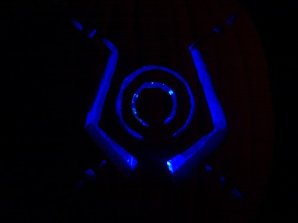
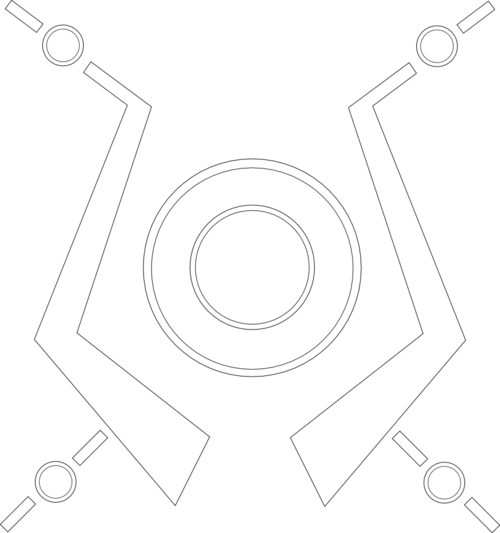

Here’s my Tron Legacy inspired Tron-O-Lantern. The design is based on the costume design seen in promotions for the upcoming movie. The glowing comes from 4 LEDs (3 blue, 1 green) and is powered by an Arduino. The Arduino is over-kill in this case, but it’s what I had.
I’d do a couple things differently with the design if I did another pass. There were issues that I didn’t notice until it was carved. For instance, the center rings should be the focal point, but they’re not because they’re too small and dim.
Here’s a clearer picture of the pumpkin:

Here’s the design I put together in Inkscape:

Here’s a shot of the Arduino set up:

I just put the LEDs and resistors directly on the Protoshield, powered it with a 9 volt battery and put the whole set up in a gallon size plastic bag.